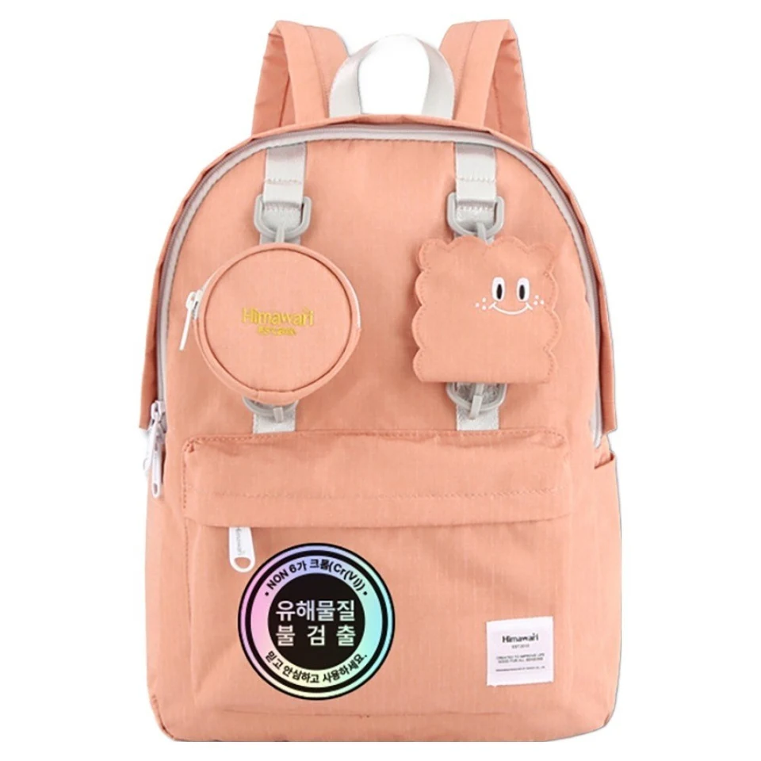

백팩 키링 달기: 지퍼를 가리지 않는 위치와 길이

작은 키링 하나만 달아도 가방의 분위기가 달라집니다. 다만 귀여운 위치와 쓰기 편한 위치가 항상 같지는 않습니다. 물건을 꺼낼 때 장식을 옆으로 치우거나 지퍼에 끈이 끼지 않도록, 달기 전후의 움직임을 짧게 확인해 보세요.
달 수 있는 부위부터 찾으세요
제품에 장식 연결용 고리나 안내된 부착 부위가 있는지 확인합니다. 눈에 보이는 모든 고리가 장식용은 아니며, 지퍼 손잡이도 무거운 물건을 매다는 용도로 단정할 수 없습니다. 연결 가능한 위치가 불분명하면 제품 문의를 먼저 하세요. 원단에 구멍을 뚫거나 봉제선을 벌려 고리를 넣지는 않습니다.
지퍼를 끝까지 열어 보고 위치를 정하세요
빈 가방을 안정된 곳에 놓고 자주 쓰는 포켓의 지퍼를 양 끝까지 움직여 봅니다. 키링의 끈이나 장식이 지퍼 이동 경로를 가로지르지 않는 곳이 우선입니다. 연결한 뒤에도 손잡이를 평소처럼 잡을 수 있는지 확인하세요. 장식을 당겨 지퍼를 여는 습관은 피하고 원래 손잡이를 사용합니다.
길이보다 실제로 흔들리는 범위를 보세요
멈춰 있을 때는 괜찮아 보여도 걸을 때 장식이 옆 포켓이나 몸에 닿을 수 있습니다. 평소 짐을 넣고 가방을 멘 다음 실내에서 천천히 몇 걸음 움직여 보세요. 앉거나 벗을 때도 끈에 얽히지 않는지 확인합니다. 길게 늘어뜨린 끈은 문이나 의자 틈에 걸릴 수 있으므로 짧고 단순하게 정리하는 편이 좋습니다.
여러 개를 달기 전에 한 개부터 써보세요
장식을 여러 개 겹치면 금속끼리 부딪히거나 단단한 부분이 가방 표면을 문지를 수 있습니다. 처음에는 가벼운 장식 하나로 시작해 소리와 흔들림이 거슬리지 않는지 살펴보세요. 지퍼를 가리거나 원단이 당겨진다면 개수를 줄이거나 연결 위치를 다시 검토합니다. 안전한 무게 한도를 모든 가방에 공통으로 정할 수는 없습니다.
분리할 때도 가방을 잡아당기지 않기
고리를 열 수 있는 방향을 확인한 뒤, 연결 부위를 받치고 천천히 분리합니다. 잘 빠지지 않는다고 원단이나 지퍼를 함께 잡아당기지 마세요. 장식을 뗀 자리에 눌림이나 마찰 흔적이 보이면 사용을 멈추고 상태를 확인합니다. 꾸미기의 마지막 기준은 사진 속 모습뿐 아니라 매일 가방을 열고 메는 동작이 편한지입니다.
참고·안내
- Himawari No.0422 제품 정보
- 제품의 크기·구성·사용 방법은 구매할 옵션의 실제 안내를 확인하세요. 이 글은 개별 제품의 성능이나 구매자 경험을 보증하지 않습니다.
- Himawari No.0422 피치 실제 제품 사진입니다. 장식과 구성은 구매할 옵션의 상품 안내를 확인하세요.
자주 묻는 질문
키링을 지퍼 손잡이에 달아도 되나요?
제품 구조와 장식의 형태에 따라 다릅니다. 제품 안내를 먼저 확인하고, 지퍼 이동을 방해하거나 손잡이에 무게가 집중되는 방식은 피하세요. 부착 가능 여부가 불분명하면 문의하는 편이 좋습니다.
대표 사진의 장식은 모든 옵션에 포함되나요?
대표 사진만으로 다른 옵션의 구성을 판단할 수 없습니다. 선택한 모델과 색상의 상품 안내에서 장식 포함 여부를 확인하세요.